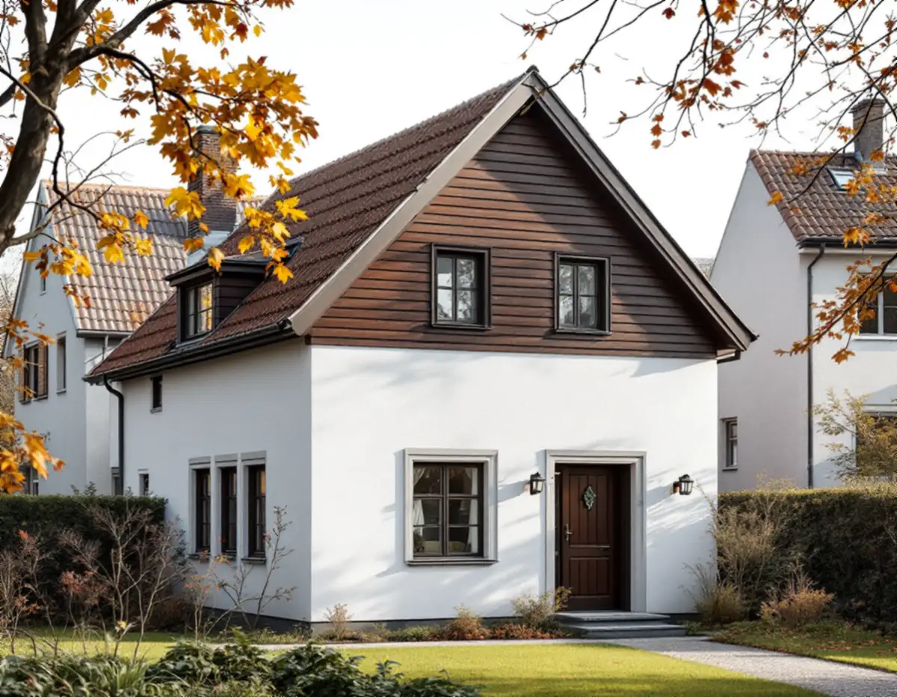
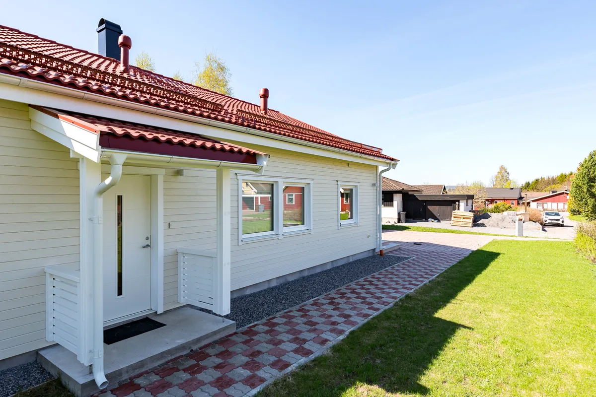

Foton och ritningar
Vi går igenom gamla bilder, ritningar och Stadsmuseets klassning för huset.

I Älvsjö villastad står villor från 1910-talet sida vid sida med hus från senare årtionden.
Beskriv jobbet kort.
Något blev fel. Kontrollera uppgifterna eller ring 08 12 410 276.
Vi tittar på jobbet på plats innan du får offert.
Du ser vad som ingår och vad det kostar.
Vi drar av ROT direkt och sköter ansökan.
Geal Entreprenad AB, Bromma. Org.nr 559303-7566.

Stockholms stad räknar Älvsjö till de villastäder där äldre stadsplaner tillåter generösa byggrätter, och där varsamheten därför behöver vara stor. Geal Entreprenad AB renoverar fasader i Älvsjö, Långbro, Liseberg, Solberga och övriga Älvsjö, med gratis platsbesök och skriftligt kostnadsförslag.
Stadens strategi Varsam utveckling av småhus- och villaområden nämner Älvsjö som ett av de stationssamhällen som på 1910-talet fick status som municipalsamhälle. Stadsplanen för Älvsjö villastad togs fram av Per Olof Hallman efter samma grundprinciper som hans planer för den tidiga trädgårdsstaden. Strategin beskriver villastäderna som privat organiserade, med individuellt utformade hus där trä var det dominerande fasadmaterialet och puts förekom.
Stadens områdesfakta för 2025 räknar 214 bostäder i småhus i stadsdelen Älvsjö, och 191 av dem är äganderätter. I grannstadsdelen Liseberg finns ytterligare 255 småhus som äganderätter. Det är alltså främst enskilda husägare som bestämmer över fasaderna här, hus för hus.
Strategins vägledning för villastaden är att karaktärsskapande material, kulörer, byggnadsdelar och detaljer ska tas tillvara eller återskapas så långt som möjligt. För en villa som har klätts in under senare år kan en fasadrenovering vara ett tillfälle att föra tillbaka det ursprungliga materialet.
Sommaren 1977 började Stockholms stadsmuseum inventera stadens förorter, och Älvsjö var en av de fjorton första stadsdelarna. Suzanne Lindhagens redogörelse beskriver metoden: inventerarna tog sig runt på cykel, besiktade exteriörerna, markerade bebyggelse från tiden före omkring 1930 som behållit sin karaktär och fotograferade samtliga inventerade fastigheter. Materialet skulle bland annat fungera som underlag i plan- och byggärenden.
För en fasadrenovering är det användbart. Fotona och kartorna kan visa hur ett hus såg ut innan senare förändringar, och när ett listverk, en foderbräda eller en panel saknas kan de ge en förlaga att arbeta efter. Redogörelsen berättar också att tomtförsäljningen i villastaden började i december 1908 och att en stadsplan fastställdes redan 1921.
Vi frågar därför gärna efter gamla foton eller ritningar till huset och jämför med det som syns när vi öppnar beklädnaden på ett dolt ställe. Taket på samma villa beskrivs under takrenovering i Älvsjö.
Strategin konstaterar att äldre stadsplaner med generösa byggrätter finns bland annat i Älvsjö, och att förtätningen av villastadsdelarna tog ny fart under 2010-talet. Fastigheter har köpts upp och styckats av, och på samma yta har flera en- och tvåbostadshus eller flerbostadshus byggts. Staden skriver att en sådan utveckling ställer stora krav på varsamhet.
Den som renoverar en äldre villa bredvid ett nybygge kan frestas att välja samma moderna material som grannen. Strategin pekar åt ett annat håll. Material, färgsättning och byggnadsdelar räknas till de aspekter som har stor påverkan på områdets karaktär och värde, och det är den äldre villan som bär sambandet med villastadens historia.
Vi föreslår därför material efter husets egen ålder, inte efter gatans yngsta hus. På en villa från 1920-talet blir det ofta träpanel med samma profil som tidigare, eller puts som lagas med ett liknande bruk. Om kulörerna finns mer under målare i Älvsjö.
Många villor kombinerar puts och trä. Boverket beskriver hur timmerhusen under 1800-talet fick träpanel som skydd för stommen, och hur puts senare användes på murade hus men även på hus med trästomme. Där två material möts uppstår skarvar som behöver tätas i två steg, så att vatten som tar sig förbi det yttre skiktet kan rinna ut. På panelen är nederkanten mot sockeln och partierna under fönsterbleck mest utsatta.
Putsbortfall beror enligt Boverket i de allra flesta fall på fukt, och fuktig puts kan frysa sönder om fukten sitter kvar över vintern. Vi letar därför efter orsaken innan något lagas och byter bara de delar som är skadade.
Lovfrågan avgörs av Stadsmuseets klassificering och detaljplanen. Hus som är markerade med gult eller grått i kartan behöver inte lov om inget annat gäller, medan blå eller grön markering eller skyddsbestämmelser i planen betyder att lov krävs. Läs mer om metoderna på sidan om fasadrenovering.
Vi går igenom gamla bilder, ritningar och Stadsmuseets klassning för huset.
Puts, panel, skarvar och sockel undersöks, och vi öppnar på ett dolt ställe vid behov.
Material och profil väljs efter husets ålder och det som finns kvar av originalet.
Lagning, byte och avfärgning redovisas som separata poster.
Skarvar mellan puts och trä tätas i två steg, och arbetet görs i torrt väder.
Vi går igenom fasaden tillsammans och visar vad som har bytts.
Skatteverket räknar fasadrengöring, reparation och byte av fasader, fasadmålning och tilläggsisolering som rotarbete i ett småhus. Byggnadsställningar som monteras för arbetet ingår också.
Avdraget är 30 procent av arbetskostnaden, högst 50 000 kr per person och år och högst 75 000 kr tillsammans med rutavdrag. Du behöver äga huset när arbetet utförs. Geal drar avdraget direkt på fakturan.
Hur mycket av den ursprungliga fasaden som finns kvar, om både puts och panel behöver lagas, om en senare inklädnad ska tas bort och om profiler måste specialbeställas. Även ställningen kring ett hus i två våningar påverkar. Efter ett gratis platsbesök får du ett skriftligt kostnadsförslag.
Puts, panel och tilläggsisolering.
Fasadrenovering i Stockholm →Takbyte, takbesiktning och plåtarbeten.
Takläggare i Älvsjö →Långbro, Herrängen och Långsjö.
Takrenovering i Älvsjö →Villatomten, prickmarken och vattnet.
Attefallshus i Älvsjö →Villorna, träbjälklaget och golvvärmen.
Badrumsrenovering i Älvsjö →Byggrätt, gamla planer och planändring.
Byggföretag i Älvsjö →Puts nedtill, panel upptill.
Fasadmålning i Älvsjö →Fönster och tilläggsisolering.
Fönsterbyte i Älvsjö →Småspröjs och fönsterluckor.
Fönsterrenovering i Älvsjö →Golvvärme under trägolv i äldre villor.
Golvläggare i Älvsjö →Slipa och ge golvet en ny kulör.
Golvslipning i Älvsjö →Villastad, flerlägenhetsvillor och kök i lager.
Köksrenovering i Älvsjö →Villastad, egnahem och småstugor i Älvsjö.
Målare i Älvsjö →Plåttak för solceller, kupor och verandor i Älvsjö.
Plåtslagare i Älvsjö →Staket, grind och plank i villastaden.
Snickare i Älvsjö →Vinden, kupan och byggrätten.
Takbyte i Älvsjö →Bårder och dekor i villastaden.
Tapetsering i Älvsjö →Byggrätt, trädgårdssida och volym.
Tillbyggnad i Älvsjö →Villastaden, elen och köket.
Totalrenovering i Älvsjö →Eller ring 08 12 410 276, mån–fre 08–17.
Beskriv jobbet kort.
Något blev fel. Kontrollera uppgifterna eller ring 08 12 410 276.